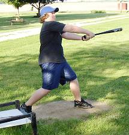
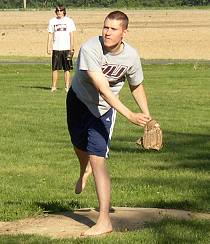

Tony Cork was masterful in his season debut on Tuesday throwing 8 innings and allowing just one run on 3 hits. |

Evan Woodard doubled twice in the game and made two fine running catches in right field in his team's win. |

Josh Massey returned for the first time since 2001 as he pitched very well but took the loss. Massey allowed just two runs in 8 innings of work. |